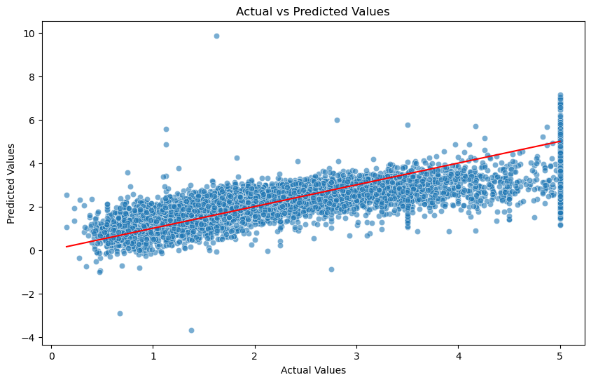
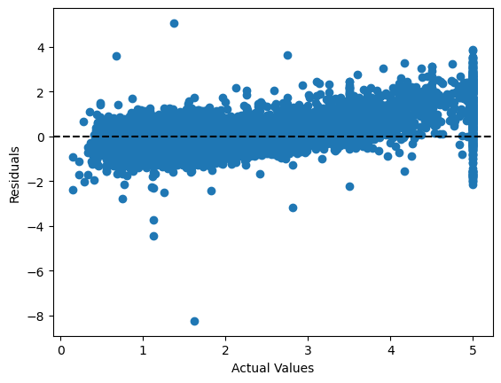
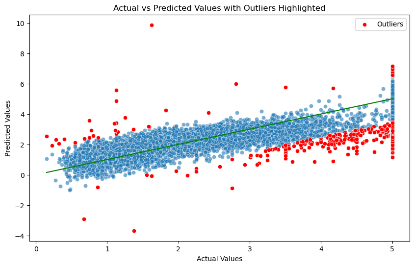

Core Pipeline Dependencies
The computational environment is anchored by four key data science modules for data handling, modeling, and visualization.
System Architecture Overview
A conceptual blueprint mapping raw census data through cleaning, splitting, and linear regression evaluation.
Algorithmic Formulations
A mathematical look at the linear regression model and the performance metrics used for evaluation.
Feature Dictionary
The eight predictor variables used to estimate median house values.
| Feature | Category | Description |
|---|---|---|
MedInc | Financial | Median income in block group. |
HouseAge | Demographic | Median house age in block group. |
AveRooms | Housing | Average number of rooms per household. |
AveBedrms | Housing | Average number of bedrooms per household. |
Population | Demographic | Total population in block group. |
Latitude | Geographic | Block group latitude coordinate. |
Longitude | Geographic | Block group longitude coordinate. |
Model Optimization Sandbox
The core regression pipeline implemented with Scikit‑Learn.
from sklearn.linear_model import LinearRegression from sklearn.metrics import mean_squared_error, mean_absolute_error def train_and_evaluate(x_train, x_test, y_train, y_test): # Algorithm: Linear Regression reg_model = LinearRegression() reg_model.fit(x_train, y_train) # Predictions y_pred = reg_model.predict(x_test) # Metrics calculation mse = mean_squared_error(y_test, y_pred) mae = mean_absolute_error(y_test, y_pred) return mse, mae
Exploratory Visual Diagnostics
Graphical analysis of model predictions, residuals, and outliers. Click any image to enlarge.



Performance Diagnostics & Engine Insights
Calculated error metrics and model assessment records.
Diagnostic Breakdown: The Linear Regression model achieved a Mean Squared Error of 0.548 and Mean Absolute Error of 0.538, indicating a moderate fit that effectively captures the main trends in housing prices.
Project Synthesis
Performance deductions and forward‑looking research strategies.
Empirical Conclusions: This research confirms Linear Regression as a suitable baseline for the California Housing dataset. With an MSE of 0.548 and MAE of 0.538, the model explains a significant portion of the variance in housing prices.
Moving Forward: To capture local anomalies and luxury market fluctuations, future versions should explore non‑linear ensemble methods like XGBoost or Gradient Boosting Regressors.